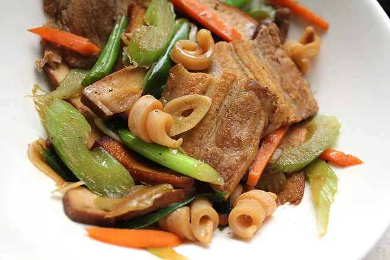

Hakka Recipe

Description
Often called simply "Hakka stir-fry" (or ke jia xiao chao) in Taiwan, where it is popular, this dish is exemplary of Hakka cuisine.
Note: Dried squid can be used in place of fresh.
Use 1/4 pound dried squid, found in Asian groceries, soaked in warm water for 30 minutes and sliced along the bodies into long thin strips.
Ingredients
- 1/2 pound boneless pork belly
- Kosher salt
- 2 tablespoons vegetable, peanut, or canola oil
- 2 cloves garlic, thinly sliced
- 1-inch piece ginger, peeled and thinly sliced to matchsticks
- 1 small carrot, peeled and julienned
- 1 cup Chinese celery, cut to 2-inch long pieces (or 1 cup regular celery sliced thinly on a strong bias)
- 2 scallions, sliced on a bias into 1-inch pieces
- 2 tablespoons Asian rice wine
- 2 teaspoons soy sauce
- 1/4 pound cleaned squid, tentacles removed and bodies sliced thinly lengthwise into strips
Directions
- Bring a small pot of lightly salted water deep enough to submerge the pork to a boil. Drop in the pork belly and simmer for 20 minutes.
Drain and let cool. Once cool enough to handle, slice pork thinly lengthwise into 1/4-inch slices.
- Heat oil in a large skillet or wok over medium high heat until shimmering.
Add the garlic and ginger and cook, stirring occasionally, until sizzling-hot and fragrant, about 10 seconds.
Stir in the pork belly and toss briskly for about 1 minute.
Stir in the carrot, celery, and scallions and cook, stirring frequently, until the vegetables are just crisp-tender, about 1 minute.
- Add the rice wine and soy sauce and cook, stirring, until bubbling, about 30 seconds.
Stir the squid and cook, stirring, just until squid turns opaque, about 1 minute.
Remove from heat and season to taste with salt and more soy sauce as necessary. Serve immediately.